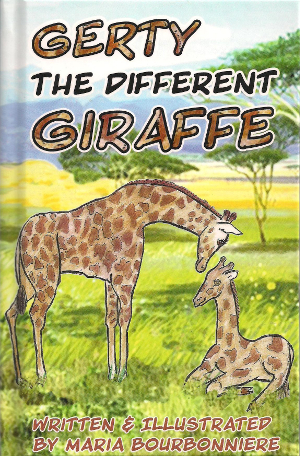

Gerty the Different Giraffe was published in 2012 and is Maria's third book. Gerty and her friends and family know it is fine to be different. Our differences are the very things that make us interesting.
Where to find Gerty the Different Giraffe
Gerty the Different is available in hardcover in most Canadian book stores and can be ordered online from international book sellers and through the following sellers: